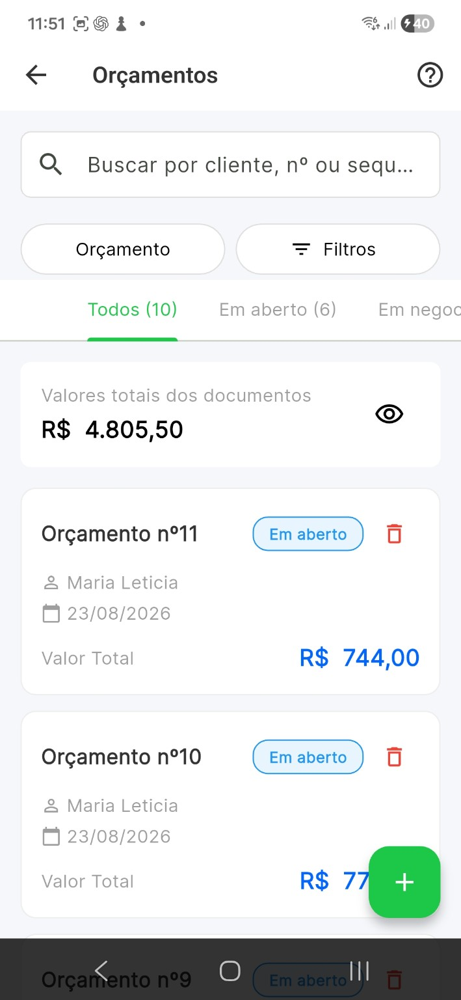

Crie
Selecione cliente, serviços, produtos, peças e materiais.
Crie propostas pelo celular, acompanhe o que está em aberto, em negociação ou aprovado e continue o fluxo até o recebimento.

Selecione cliente, serviços, produtos, peças e materiais.
Informe condições de pagamento, observações e valores.
Envie por WhatsApp, link digital ou PDF.
Veja a evolução da negociação e a resposta do cliente.
Converta em venda, aplique desconto e registre o pagamento.

Busca, filtros e status ajudam a separar o que ainda está em aberto do que já entrou em negociação, foi aprovado ou concluído.
O orçamento pode sair do app como PDF ou como uma página digital. O cliente recebe o link e acessa a proposta pelo navegador, sem instalar o Valeu.

O novo fluxo registra eventos importantes da negociação e concentra o contexto do orçamento.
A atividade do orçamento registra quando a página pública foi acessada.
A conversa fica associada à proposta, facilitando acompanhar dúvidas e respostas.
A aprovação feita na página pública volta para o fluxo do profissional.

Continue o trabalho dentro do Valeu. O orçamento pode virar venda e o profissional segue para a confirmação do recebimento.
Além do fluxo digital, o Valeu gera um PDF organizado com dados do cliente, itens, valores e condições de pagamento.

Orçamento, compartilhamento, interação do cliente, aprovação e venda passam a fazer parte do mesmo fluxo de trabalho.
Informações sobre criação, envio, acompanhamento e fechamento de orçamentos no Valeu.
Sim. Você pode compartilhar a proposta pelo WhatsApp e também disponibilizar um link digital para o cliente.
O fluxo registra atividades importantes da negociação, incluindo a abertura do link do orçamento pelo cliente.
Não para visualizar o orçamento digital. A página pública abre no navegador do cliente.
Sim. O orçamento pode continuar para o fluxo de venda, evitando recadastrar os itens e valores.
Sim. O PDF continua disponível para compartilhamento e impressão.
Menos retrabalho entre a proposta e a venda.